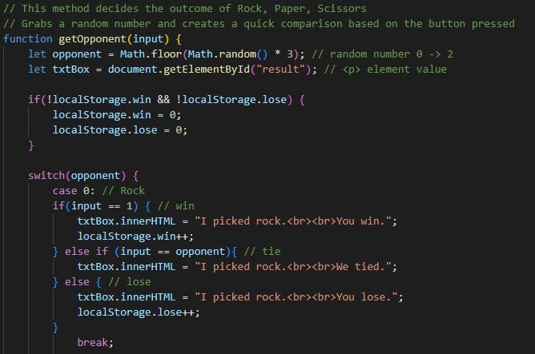
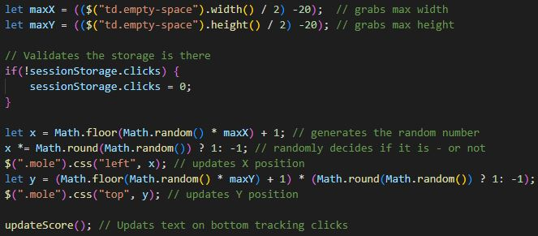
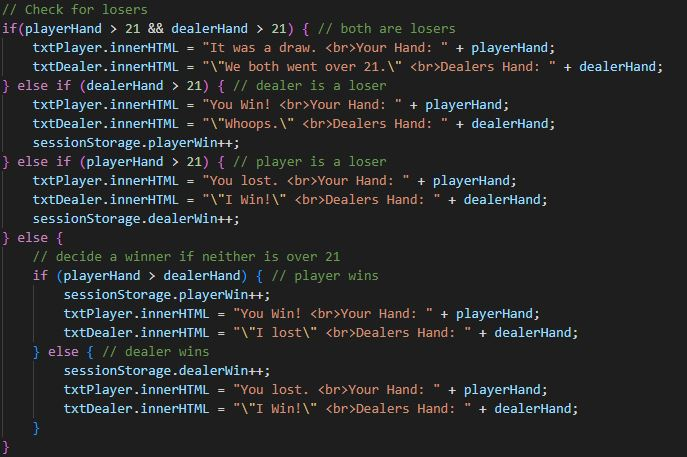
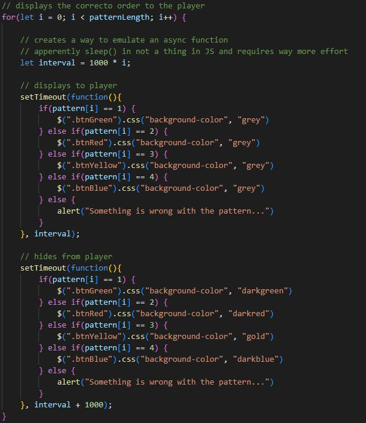

The Javascript Involved |
|
|---|---|
|
This page will quickly go over the code involved, the more tedious details will be commented in the code. |
|
Despite the order I put the pages, I actually did Rock, Paper, Scissors first.
This looks more involved than it is, most of it is copy pasted.
This page uses: Functions, Variables, If/Else/Switch Statments, DOM, and Events.
I guess that means it covers the 5 concepts required, but I still plan to use a few more (I am writing this as I go). |
 |
Next, I worked on the whack-a-mole game. Thankfully, I have experience working with 2D vectors with Unity, so this wasnt too out there to come up with. I try to keep things relative as a good habit for reusing code, so I used exsisting values from the DOM using jquery to get a x and y coordinates of the box. Then I used those values to get a min and max value for random number generation. This all adds up to a moving button. |
 |
Following after, blackjack. This one became more of a thought experiment than I thought. This left me thinking a lot about the design and accuracy of the game. I am not sure how happy I am with it, im glad it works and I did it first try, but I also see a lot of problems. Frankly, it is not so much a game as much as it is just rolling dice. Also, much like Rock, Paper, Scissors, the code is all bark and no bite. Really, it does not use anything new. I speak in detail on things I thought about while working on this in the code, I recommend reading that if youre truly curious. |
 |
|
This one was a headache... I wasted a lot of time trying to use a switch with an array,
and I learned you can not make a loop sleep and that JS uses async functions to emulate that,
so I got a little creative. You can see in the image how I got around this limitation in JS,
I simply incramented the Timeout delay based on how far it is in the array.
I needed this because the loop would call the function but not wait for Timeout,
so it would call them all at the same time. This made it so the delay would be longer after every iteration.
|
 |